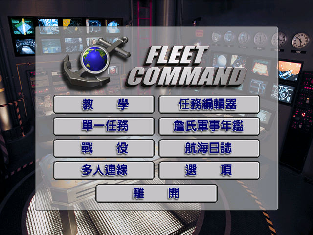
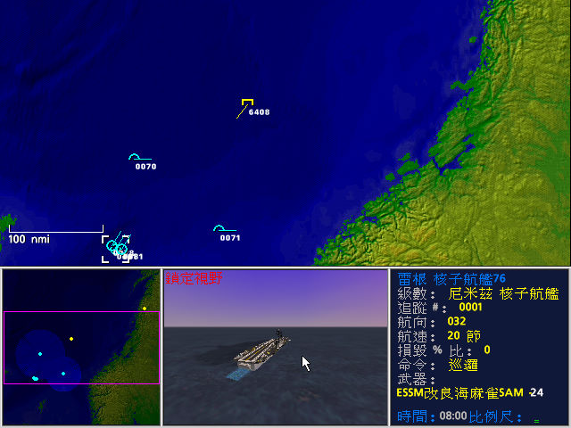

名稱：艦隊指揮官／珍氏艦隊指揮官／簡氏艦隊指揮官 (Jane's Fleet Command，中文版) 簡介：Sonalysts 1999年出品的即時海戰戰術模擬遊戲，由EA代理發行 [待補]。

保護：光碟SafeDisc 1.11 限制：遊戲只能在Win9x系統上安裝。 備註：「XP系統安裝修正檔」使用方法： 1.將光碟內容全部拷到一個目錄，覆蓋Setup.exe修正檔後進行安裝。 2.必須設定後述的Registry，以修正實際的光碟目錄。 備註：非安裝移機者，必須設定下列Registry（假設光碟在D）： [HKEY_LOCAL_MACHINE\SOFTWARE\Jane's Combat Simulations\Fleet Command\1.0] [HKEY_LOCAL_MACHINE\SOFTWARE\WOW6432Node\Jane's Combat Simulations\Fleet Command\1.0] "cdInstallPath"="D:" "rootInstallPath"="." "musicInstallPath"=".\\Audio\\Music" "graphicsInstallPath"=".\\Graphics" "sfxInstallPath"=".\\Audio\\Sfx\\sfx.agg+" 備註：虛擬機+XP無法執行，請使用Win64+dgVoodoo2，或PCem+Win98。 檔案：XP_Install.rar = XP系統安裝修正檔 Patch138_cht.rar = 繁中1.38更新檔（已去除SafeDisc保護） crack100.rar = 1.00破解檔